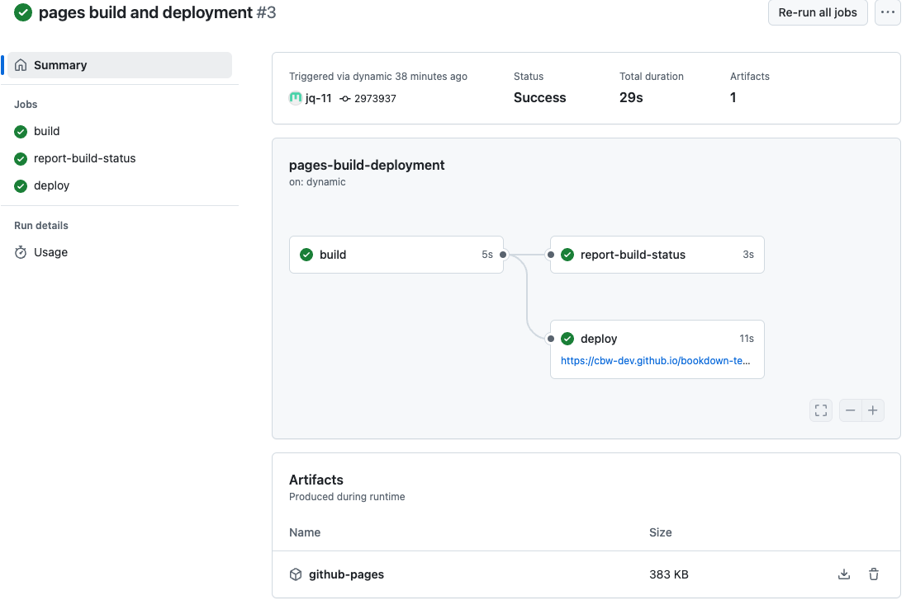

Deploy your site
In the top navigation bar, select Settings.
See image

Then, go to the Pages sidebar option.
See image

“Deploy from a branch” is already selected, which is what we want. We must change the branch from “none” to “main”. Select the “None” dropdown button and select “main”.
See image

Change the folder from
/rootto/docsand press save.See image

Great! Now we’re waiting on the page to build and deploy, which should take less than a minute.
Check your deploy and see your website!
To see updates, go to the Actions page (found along the top navigation bar. This will help you understand how the deploy is working, and if it succeeded or failed.
See image

You can click pages build and deployment for updates.
See image

A successful deploy will have a green checkmark next to it. You can inspect the 3 steps: build, report-build-status, deploy. Once it’s done deploying, you can find the website at the link provided under the “deploy” step!
See image

A failed deploy will have a red cross next to it. Clicking through the steps can help you determine what went wrong in the deploy.
See image

Important!
Warning: A website can build properly, but may not deploy properly! It is a good idea to check after making big changes.